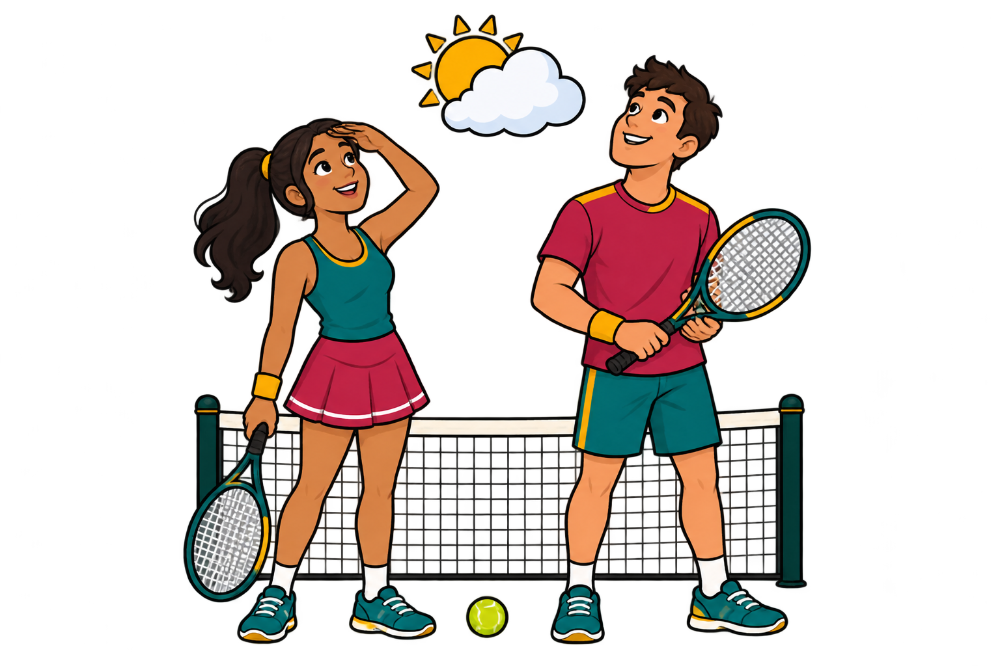
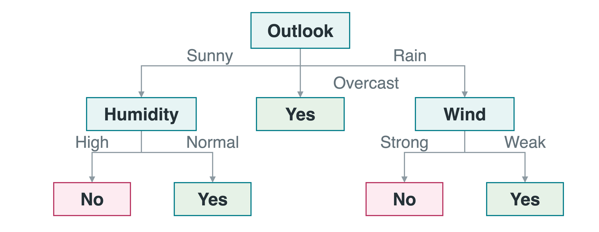
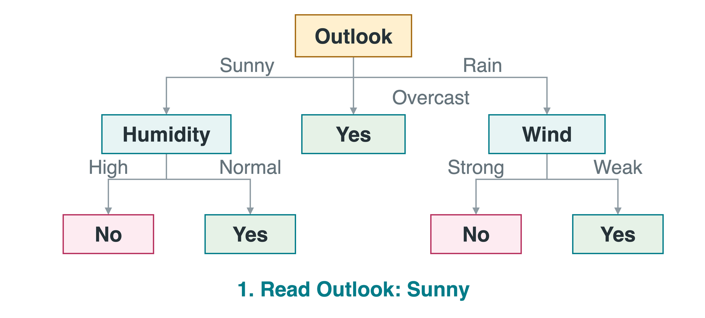
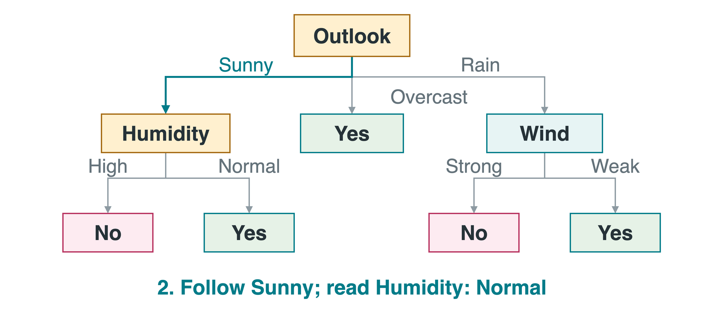
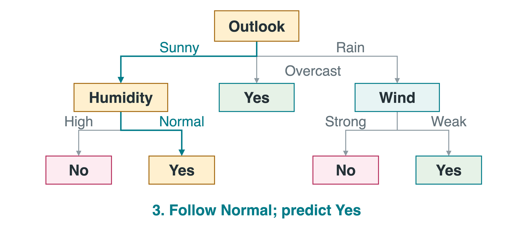
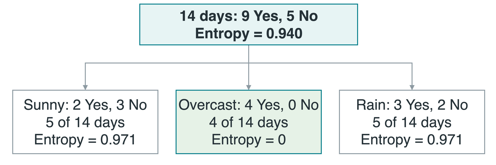
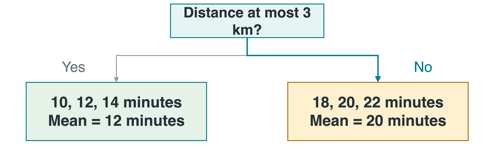
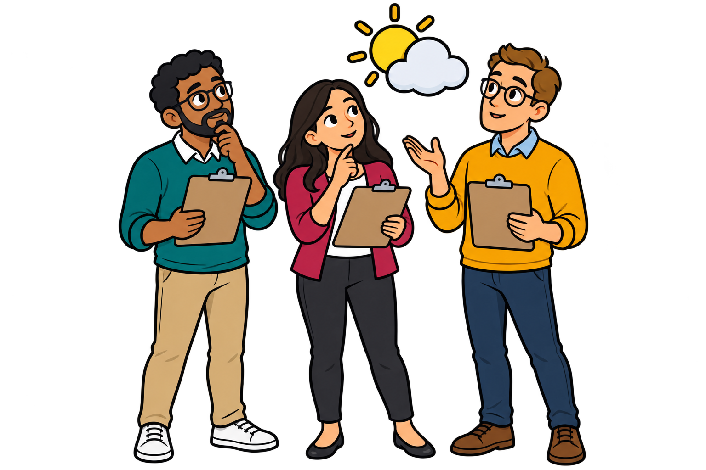
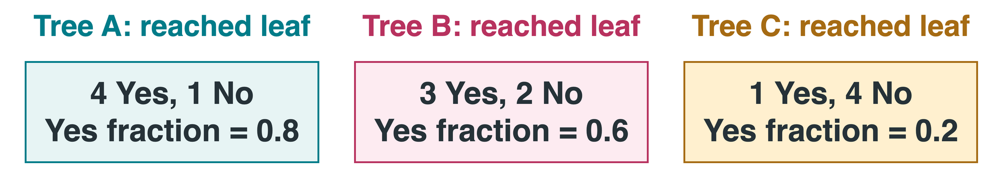

CS 463G & CS 663
Lecture 26: Decision Trees and Random Forests
Fall 2026
Will the Tennis Group Play?
Predict whether a group will play tennis from the day’s weather.
A feature (or attribute ) is an input description.
A label is the recorded answer: Play = Yes or No.
One observation is one previous day.

Outlook: sky conditions
Sunny, Overcast (fully cloudy), Rain
Temperature
Hot, Mild, Cool
Humidity: moisture in the air
High, Normal
Wind
Weak, Strong
Classification means predicting a category. These are teaching records.
The 14-day tennis table and its categorical tree come from the supplied Spring 2025 Beamer lecture. The records are a teaching dataset, not a real campus study. The target is the group’s recorded decision, not a weather forecast or safety recommendation. Day identifiers are row labels, not predictive features. The later forest examples illustrate a method, not measured evidence that this tiny dataset supports a real-world application.
Training Records
The full training set has 14 days: 9 Yes and 5 No . Six example rows:
D1
Sunny
Hot
High
Weak
No
D3
Overcast
Hot
High
Weak
Yes
D6
Rain
Cool
Normal
Strong
No
D9
Sunny
Cool
Normal
Weak
Yes
D11
Sunny
Mild
Normal
Strong
Yes
D14
Rain
Mild
High
Strong
No
We learn the questions from labeled records. For a new day, its label is unknown.
Download all 14 records (CSV)
All split calculations use the full 14-day table, not just these six displayed rows.
CSV means comma-separated values: a plain-text table. The complete download preserves all 14 rows from the original Beamer source. The six displayed rows are an excerpt for readability, not a separate training sample. Validation and test examples must remain separate, as in Lecture 25.
A Decision Tree
A decision tree predicts by following feature tests.

Root: the first test. Branch: one test outcome.Leaf: a final prediction, with no further question.
One root-to-leaf path is a rule. For example: Sunny and Normal humidity predicts Yes.
The tree follows the supplied Spring 2025 tennis example. An internal node asks a question; a child is a node reached by a branch from its parent. This tree uses multiway categorical splits, including three Outlook branches. Software such as scikit-learn commonly uses binary splits instead. A prediction is not a guarantee about the next group’s choice. Background: AIMA fourth edition, Section 19.3, and https://scikit-learn.org/stable/modules/tree.html.
Following One Prediction
New day: Sunny, Mild temperature, Normal humidity, Strong wind . Play = ?



Only questions on this path matter. This tree does not ask about wind on a Sunny day.
Begin at Outlook, then follow Sunny to Humidity, then Normal to Yes. A future day can share all feature values with a training day while remaining a distinct observation with an unknown actual label. The path answers the model’s prediction only.
Choosing a Split: Pure or Mixed?
A split divides training records according to a feature test.
A group is pure when all its labels agree. Entropy measures how mixed, or uncertain, the labels are.
4 Yes, 0 No
All agree
0 bits
7 Yes, 7 No
Evenly mixed
1 bit
9 Yes, 5 No
Mixed, with more Yes
About 0.940 bits
The unit bit comes from measuring information with base-2 logarithms.
A useful split tends to make its children purer. A pure training group does not guarantee certainty on new data.
Purity describes observed labels, not noise-free truth. For two classes, entropy is largest at equal proportions and zero when all labels agree. Only the 9 Yes, 5 No group is the full tennis set; the other two groups illustrate the endpoints. Other impurity scores exist, but the worked example uses entropy.
Entropy: A Worked Calculation
Let S be a group of records and q its fraction of Yes labels . The No fraction is 1-q .
H(S)=-q\log_2 q-(1-q)\log_2(1-q).
Here H(S) is the group’s entropy. A zero-probability term contributes zero: 0\log_2 0=0 by convention.
For all 14 tennis days, q=9/14 :
H(S)=-\frac{9}{14}\log_2\frac{9}{14}-\frac{5}{14}\log_2\frac{5}{14}\approx0.940\ \text{bits}.
What happens if a group contains only Yes labels?
q=1 , so the entropy is zero. No uncertainty remains about the labels in that training group.
The zero term uses the continuous extension of x log x at zero, not a direct evaluation of log(0). This is the two-class special case of entropy. We use q to avoid confusing a class fraction with Lecture 25’s feature count p. The unrounded full-set entropy is 0.9402859586706311 bits. Empirical entropy is not a calibrated certainty guarantee for future examples.
Information Gain: Split on Outlook
Information gain (IG) is parent entropy minus the weighted average child entropy. Each child is weighted by its share of the 14 records.

H(\text{after})=\frac{5}{14}(0.971)+\frac{4}{14}(0)+\frac{5}{14}(0.971)\approx0.694.
\operatorname{IG}=H(\text{before})-H(\text{after})\approx0.247 bits, using unrounded values.
Sunny and Rain each have entropy 0.9709505944546686 bits. The weighted child entropy is 0.6935361388961918, and information gain is 0.24674981977443933. Displayed rounded values can differ in the last digit when subtracted; the gain uses unrounded quantities. H(after) is conditional label uncertainty averaged over branches, not the entropy of the Outlook feature.
Choosing the Root
Compare the feature questions on the same 14 training records :
Outlook
0.247
Humidity
0.152
Wind
0.048
Temperature
0.029
Choose Outlook . Overcast is already pure. For Sunny and Rain, choose another question using only records that reach that child.
This is greedy learning : choose the best split now, then repeat within children. It need not produce the globally best tree.
Unrounded gains: Outlook .24674981977443933, Humidity .15183550136234159, Wind .04812703040826949, Temperature .02922256565895487. Recompute the criterion within each child subset, not over all 14 rows after choosing a branch. Sunny then splits on Humidity and Rain on Wind. This construction does not backtrack. A unique day ID could look informative by isolating every row; it is not among the four candidate weather features.
Growing a Categorical Tree
Majority label: the most frequent label. rows holds the current records and features holds available questions. fallback is the parent’s majority label.
function LearnTree (rows , features , fallback )
if rows is empty: return Leaf (fallback )
answer = majorityLabel (rows )
if labels all agree or features is empty:
return Leaf (answer )
A = featureWithLargestGain (rows , features )
node = Test (A )
for each value v of A :
add child LearnTree (rows where A =v , features without A , answer )
return node
Test(A) creates a question node. Leaf(answer) creates a prediction. Each child repeats on its own records.
rows is the current group of labeled observations; features is the remaining collection of candidate categorical attributes. Test(A) creates a question node; Leaf(label) creates a prediction. At the root, initialize fallback with the full training majority. Known attribute domains define children even when one has no matching examples; it uses the parent’s majority. Resolve majority and gain ties with a fixed rule. This simplified multiway categorical learner differs from scikit-learn’s Classification and Regression Trees (CART) implementation. Numeric threshold learners can reuse a feature at later nodes, so removing A is specific to this categorical version. Practical stopping settings follow the numeric example.
Numeric Inputs and Regression Trees
A threshold is a numeric cut point, such as distance \leq3 km.
A regression tree predicts a number. For squared-error fitting, each leaf predicts the mean training output in that leaf.

A new 4 km delivery route reaches the right leaf: predict 20 minutes . The output is a duration, not a Yes/No label.
In this invented example, training distances 1,2,3,4,5,6 km have durations 10,12,14,18,20,22 minutes. Thresholds 3 and 3.5 produce the same training partition. Each leaf mean minimizes that child’s squared residual sum. Compare numeric splits using squared errors rather than label entropy. Predictions are constant within a leaf, not sloping fitted lines. Reference: https://scikit-learn.org/stable/modules/tree.html#regression.
Overfitting and Pruning
A deep tree can memorize accidental details instead of repeatable patterns.
Depth: the number of questions along a path. Maximum depth limits the longest path.A minimum leaf size requires enough records to support a prediction.
Pruning: remove branches after growing a tree, replacing them with a simpler prediction.
Splitting on a unique Day identifier (ID) can memorize all 14 labels without providing a useful weather rule for a new day.
Choose tree size using validation data. Pruning can help, but a simpler tree is not automatically more accurate.
Maximum-depth and minimum-leaf-size settings restrict growth; post-pruning simplifies an already-grown tree. A pruned classification subtree can use the majority label reaching it; a regression subtree can use their mean. A weak immediate split can enable a useful later interaction, so early stopping and post-pruning need not give the same result. Day ID is a tempting memorization feature, not one used in the worked tree. Validation comparisons also have sampling uncertainty.
Why Combine Several Trees?
An ensemble combines several models’ predictions.
A single learned tree can change substantially when a few training records change. This sensitivity is variance , as in Lecture 25.
Combining useful but different trees can reduce that sensitivity because their errors need not line up.

Would 100 identical copies of one tree give that benefit?
No. Identical trees give identical predictions. The ensemble needs useful differences among its members.
The committee is an analogy, not an implementation. Predictive variability after retraining is estimator variance. Averaging can reduce it when errors are not perfectly correlated, but cannot automatically remove systematic bias or fix bad labels. Breiman’s original random-forest paper relates performance to individual tree strength and dependence between errors: https://www.stat.berkeley.edu/~breiman/randomforest2001.pdf.
Combining Forest Predictions
Use the same new day: Sunny, Mild, Normal humidity, Strong wind .
A leaf may remain mixed when growth is limited. Its class fractions estimate probabilities. These are illustrative outputs :

\text{Mean Yes probability}=\frac{0.8+0.6+0.2}{3}\approx0.533.
Predict Yes , the larger average class probability. Some forests instead use majority votes from tree labels.
For regression, average the numbers: trees A, B, and C predicting 18, 20, and 22 minutes for one route give 20 minutes .
The leaf counts are invented, not claimed results from fitting the tennis table. A leaf’s class fraction is its class count divided by all counts in that leaf. Depth or leaf-size constraints can leave mixed labels in a final leaf. Averaging .8,.6,.2 gives 8/15 for Yes and 7/15 for No. This matches scikit-learn’s probability averaging. Breiman’s original classifier uses majority votes; these methods can disagree, though they agree here. The separate regression illustration averages three tree outputs for the same route: (18+20+22)/3=20 minutes. These are predictions from separate trees, not a list of training records. Estimated probabilities need not be perfectly calibrated. References: https://scikit-learn.org/stable/modules/ensemble.html#random-forests and https://scikit-learn.org/stable/modules/generated/sklearn.ensemble.RandomForestClassifier.html#sklearn.ensemble.RandomForestClassifier.predict_proba.
Using a Random Forest
In tabular data , rows are observations and input columns are features.
Hyperparameters are settings chosen before fitting. Split rules are learned from records.
Number of trees
More averaging, with more computation and memory
Candidate features per node
How much the trees can differ
Depth / minimum leaf size
How detailed individual trees can become
Benefit: can capture nonlinear patterns and feature combinations.
Cost: harder to explain than one small tree. More trees do not fix bad data.
Choose settings with validation data and assess the final forest on separate test records.
The toy tennis set does not establish real-world performance. More trees can stabilize predictions, but accuracy need not improve indefinitely. Candidate-feature and leaf-size choices affect bias and variance. Libraries differ in categorical support: scikit-learn’s tree estimators need numeric representations, so Sunny-like strings need suitable encoding. Fit preprocessing on training data only. Tracing one tree is easier than explaining an entire forest; feature importance is not proof of causation. Practical API: https://scikit-learn.org/stable/modules/generated/sklearn.ensemble.RandomForestClassifier.html.
Takeaways
A tree follows feature tests from a root to a prediction leaf.
Entropy measures label mixture. Information gain measures its reduction from a split.
Greedy learning builds locally. Size limits and pruning help control overfitting.
A forest combines trees randomized through training rows and candidate features.
Classification can combine probabilities or votes. Regression averages numeric predictions.
A readable rule and a strong ensemble are both useful. Judge either one on new observations.
Asset credits